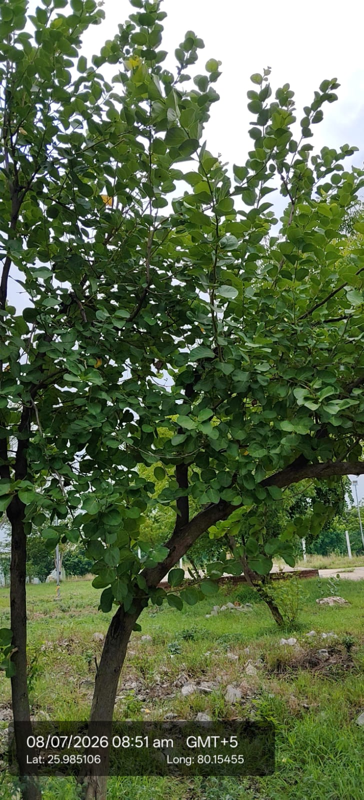

| Scientific name | Butea monosperma |
|---|---|
| Family | Fabaceae |
| Category | Trees |
Habitat & Growing Conditions
- Native to South Asia. Very common across India
- Very common in UP including Kanpur/Ghatampur area at your coordinates. Grows in dry deciduous forests, wastelands, and is planted in villages like in your photo
- Thrives in tropical to subtropical, dry climate
- Needs full sun and well-drained soil. Highly drought tolerant
- Grows 12-15 m tall. Leaves are trifoliate with 3 large, round to oval leaflets. Leaflets are thick, glossy green with prominent veins. This matches your photo - broad, leathery, ovate leaflets in groups of 3 on branches
Ecological & Economic Importance
- Medicinal: Bark, leaves, seeds, and flowers used in Ayurveda. Used for skin diseases, wound healing, diabetes, and as an astringent. Note: Consult a healthcare professional before medicinal use
- Dye: Flowers give bright orange-yellow dye "Kesari" used in Holi and for textiles
- Other uses: Gum "Butea gum" used in medicine and confectionery. Leaves are used as plates and for making bidis. Seeds have insecticidal oil
- Ecological: Nitrogen-fixing tree. Good for wasteland reclamation and provides fodder
- Cultural: Called "Forest on Fire" when in bloom. Considered sacred